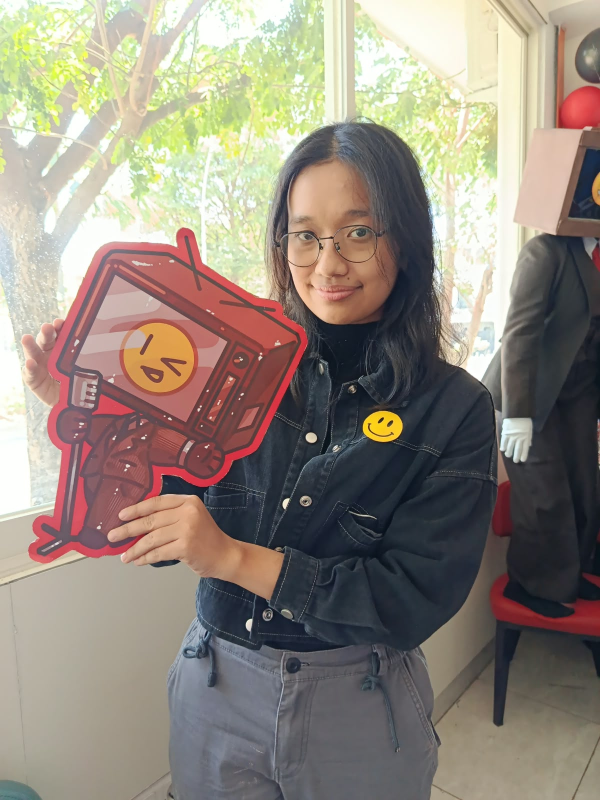

Gabriella Putri Atmaja Adi
Surabaya, Jawa Timur, Indonesia · SMA Kristen Petra 1 · Science (IPA)
A student with a strong interest in information and communication technology. I actively participate in competitions and organisational activities, and I believe in taking curiosity as a method to enjoy the world.
Education
SMA Kristen Petra 1 Surabaya
- Top 3 finalist in the inter-grade short story competition (2022) — 100+ participants.
- Participated in the national-level Schematics competition organised by Institut Teknologi Sepuluh Nopember, Surabaya.
- Actively involved in informatics-related subjects and activities.
SMP Kristen Kalam Kudus Makassar
- Participated in the inter-grade batik competition (2020).
- Member of the Batik Extracurricular (2020–2021).
- Member of the Debate Club (2022).
Organisation & Volunteer Experience
Gereja MDC (Masa Depan Cerah)
- Greet people, help organise attendees, and deliver church announcements during weekly services.
- Participate in church ministry as a singer.
- Coordinate weekly service operations and ensure the programme follows the scheduled rundown.
- Manage shared audio equipment (microphones) across multiple teams.
- Collaborate with worship, media, and ministry teams for smooth transitions.
- Monitor timing and handle on-site issues during services.
Gereja MDC – Youth Camp
- Coordinated event participants with the entire team.
- Served as database form supervisor and manager for participant applications.
- Sent confirmation messages and payment reminders to participants before camp.
- Acted as the organisation's representative to third parties and vendors.
- Assisted with organising and preparing supplies.
SMA Petra – Petra Bazaar
- Actively participated as an exhibitor in the school bazaar held every semester.
- Worked in roles including Marketing, Merchandising, and Finance.
Awards
1st Place — Chemistry Smart Challenge 2022
- National competition focused on innovating solutions for food waste and developing valuable products from it.
- Presented research paper to a panel of university lecturers.
- Won 1st Place among 20 participating teams.
Favorite Winner — Innovation Challenge: Ecohack 2024
- National-level pitching competition.
- Developed a creative and original product innovation idea with the team.
- Received the Favourite Winner award among 40+ participants.
Skills
Hard Skills – Programming
Hard Skills – Other
Soft Skills
Languages
English
IELTS Academic — Overall Band 7.5 (2024)
Indonesian
Native